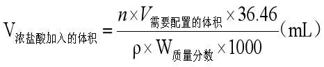
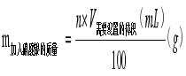

锶-90（90Sr）放射化学分析
1、 nmol/L硝酸溶液
例如：配制1L 1mol/L的硝酸溶液 量取69mL浓硝酸,，加入931mL去离子水，配制成1L的溶液。其中W质量分数为65%，ρ=1.4g/cm3
2、 nL a+b硝酸溶液（生物样）
例如 配制1L 1+9的硝酸溶液 量取100mL浓硝酸，加入900mL去离子水，配制成1L的溶液。
3、 nmol/L盐酸酸溶液

例如 配制1L 1mol/L的盐酸溶液 量取86mL浓盐酸,，加入914mL去离子水，配制成1L的溶液。 其中W质量分数为36%，ρ=1.18g/cm3。
4、 a+b盐酸溶液（生物样）
例如 配制1L 1+5的盐酸溶液 量取167mL浓盐酸，加入833mL去离子水，配制成1L的溶液。
5、 饱和草酸溶液 天平称取110g草酸固体溶于1L去离子水中。
6、 n%草酸溶液（W/V）
例如 配制1000mL 0.5%的草酸溶液 称取5g草酸固体溶于1000mL去离子水中。
7、 nmol/L醋酸酸溶液（发烟硝酸法）
例如 配制500mL 6mol/L的醋酸溶液 量取172mL醋酸,，加入328mL去离子水，配制成500mL的溶液。 其中W质量分数为99.5%，ρ=1.05g/cm3。
8、 n%铬酸钠溶液（W/V）（发烟硝酸法）
例如 配制500mL 30%的铬酸钠溶液 称取150g铬酸钠固体溶于500mL去离子水中。
9、 nmol/L的氢氧化钠溶液（发烟硝酸法）
例： 配制1L 5mol/L的氢氧化钠溶液 称取200g氢氧化钠,配制成1L的溶液。
铯-137（137Cs）放射化学分析
1、 nmol/L的氢氧化钠溶液
例：2mol/L的氢氧化钠溶液 称取80g氢氧化钠,配制成1L的溶液。
2、 nmol/L硝酸溶液
例：1mol/L的硝酸溶液 量取72mL浓硝酸,，加入928mL去离子水，配制成1L的溶液。其中W质量分数为65%，ρ=1.4g/cm3。
3、 nmol/L硝酸铵溶液：
例：0.2mol/L的硝酸铵溶液 称取16g硝酸铵,配制成1L的溶液。
3、 硝酸-硝酸铵混合溶液 2mol/L硝酸溶液和0.2mol/L硝酸铵溶液等体积混合
4、 磷钼酸铵粉末（扩大四倍配置）
(1)天平称取8g磷酸氢二铵于1000mL烧杯，加入250mL去离子水；
(2)天平称取10g硝酸铵于100mL烧杯，加入50mL去离子水与30mL浓硝酸(65%~68%)，玻璃棒搅拌至完全溶解；
(3)将(2)中100mL烧杯中溶液倒入(1)中，搅拌，电热板加热至50℃；
(4)天平秤取70g钼酸铵于500mL烧杯，加入50mL去离子水，搅拌均匀；缓慢倒入(3)中所得50℃的1000mL烧杯中溶液中，倒入过程需不断搅拌1000mL烧杯内混合液(倒入过程中有难溶物生成)；
(5)将(4)步所得混合液冷却至室温，沉淀难溶物，待完全沉降后虹吸法吸去去上清液；
(6)取布氏漏斗并垫一层快速滤纸对(5)步所得沉淀抽滤，抽干后依次加入100mL的5%硝酸溶液与50mL无水乙醇洗涤，最后将滤纸与沉淀一同置于托盘中避光风干，保存于棕色瓶中。
5、 碘铋酸钠溶液（扩大五倍配置）
(1)于100mL烧杯中加入48mL去离子水，再依次加入20g碘化铋，20g碘化钠与2mL冰乙酸；
(2)不断搅拌烧杯中混合液，取快速滤纸过滤，将滤液置于棕色瓶中，放入冰箱保存。
空气中14C的测定方法
1、甲苯-Triton X-100乳化闪烁液 0.4% 2,5-二苯基恶唑PPO和0.03%1,4-双-【5-苯基恶唑基-2】-苯POPOP甲苯溶液与乳化剂乙二醇聚氧乙烯异辛基酚醚Triton X-100体积比2.5:1
牛奶中131I的分析方法
1、 nmol/L盐酸羟胺溶液
例：配制3mol/L盐酸羟胺溶液1L 称取208.5g盐酸羟胺,配制成1L的溶液。
2、 n%硝酸银溶液

例：配制1%硝酸银溶液1L 称取10g硝酸银,配制成1L的溶液。
3、 n%亚硫酸氢钠溶液
例：配制5%亚硫酸氢钠溶液1L 称取50g亚硫酸氢钠,配制成1L的溶液。
4、 n%氢氧化钠溶液
例：配制5%氢氧化钠溶液1L 称取50g氢氧化钠,配制成1L的溶液。
5、 nmol/L盐酸溶液
例：1mol/L的盐酸溶液 量取85mL浓硝酸,，加入915mL去离子水，配制成1L的溶液。其中W质量分数为36.5%，ρ=1.18g/cm3。
6、 nmol/L的氢氧化钠溶液
例：1mol/L的氢氧化钠溶液 称取40g氢氧化钠,配制成1L的溶液。